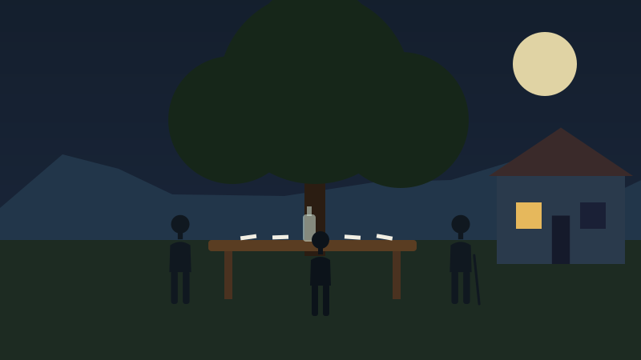

Capítulo I: o carteiro, a casa e o solo de domingo (p. 1–7)

Quem aparece: Joaquim dos Anjos, Engrácia, Clara, Marramaque, Lafões, Dona Margarida (citada), Mr. Quick Shays, João Pintor, o "Turuna", o padre Sodré, o geólogo John Herbert Brown.
O que acontece
- p. 1: Joaquim dos Anjos, carteiro, não era de serestas, mas gostava de violão e modinhas e tocava flauta. O narrador lamenta que a flauta "caiu de importância" e lembra os flautistas Calado (a polca "Cruzes, minha prima!") e Patápio Silva (aqui o narrador fala em 1ª pessoa: "Quero falar do Patápio Silva"). Joaquim compunha valsas e polcas: a polca "Siri sem unha" e a valsa "Mágoas do coração", vendidas por cinquenta mil-réis cada a uma casa de música da rua do Ouvidor. Sabia pouco de teoria; ficou na "artinha" de Francisco Manuel.
- p. 1–2: A origem de Joaquim. Nasceu perto de Diamantina (MG), onde era tido como o primeiro flautista nas festas de igreja. "Pouco ambicioso em música, ele o era também nas demais manifestações de sua vida." Aos 22 anos virou pajem e ajudante de um geólogo inglês, John Herbert Brown, que fazia pesquisas "desinteressadas" (o povo achava que ele caçava diamantes). O inglês o levou ao Rio, pagou a estadia e deu dinheiro para a volta, um chapéu de cortiça, perneiras, um cachimbo e fumo "Navy Cut". Joaquim vendeu as perneiras e o chapéu num belchior e resolveu ficar no Rio.
- p. 2: Trabalhou no escritório de um grande advogado mineiro ("aqui irás travando conhecimentos"). Sua única ambição: um emprego público com aposentadoria e montepio. Depois de dois anos virou carteiro, "havia bem quatro lustros" (20 anos), e casou meses depois. Herdou a casa e terras da mãe em Inhaí, vendeu e comprou a casinha no subúrbio, que chama de seu "buraco".
- p. 2: A planta da casa: dois quartos, sala de visitas, sala de jantar, puxadinho com cozinha e despensa; fora, um barracão para banheiro e tanque; no quintal, goiabeiras, laranjeiras, limão galego, mamoeiros e um grande tamarineiro no fundo.
- p. 2–3: A rua: plana, vira pântano quando chove, caminho de carroças para Inhaúma, que "devia merecer mais atenção da edilidade" (crítica ao governo). Casas no estilo chalet. Dela se vê um "redondel de montes" que mudam de cor com o dia: verde e azul de dia, "ouro e púrpura" no crepúsculo.
- p. 3: A chácara antiga: casa colonial com azulejos, mangueiras, jaqueiras, coqueiros e estatuetas de louça portuguesa mutiladas ("Primavera", "Aurora"), muros cobertos de hera "como um severo, cerimonioso e vivo manto de outras épocas". O narrador lembra que há 30 anos os bairros ricos tinham muros assim (saudade de um Rio que acabou).
- p. 3–4: A chácara foi alugada aos "bíblias" (protestantes) de Mr. Quick Shays, americano de "eloquência bíblica" e português "pitoresco". O narrador ironiza esses "pequenos luteros" que fundam seitas novas. Na iniciação, os noviços dormem em barracas de campanha entre as árvores: parece um "convento ao ar livre" com cara de "acampamento guerreiro".
- p. 3: João Pintor, operário das oficinas do Engenho de Dentro, preto retinto, de pés tão grandes que nenhum sapato servia, frequenta os "bíblias" porque "não eram como os padres, que, para tudo, querem dinheiro". O "Turuna", seguidor do padre Sodré (Santuário de Nossa Senhora de Lourdes), diz que ele foi só por causa do quarto de graça na chácara.
- p. 4: A religião do povo: o pobre mistura crenças conforme a necessidade (feitiçaria para "atrasos de vida", espírita para doença), mas ninguém deixa de batizar o filho na Igreja Católica: "Está doido! Meu filho ficar pagão!". Joaquim não é religioso; Engrácia é devota, mas quase não vai à igreja. Os dois batizaram todos os filhos.
- p. 4: Casados há quase 20 anos. Clara, a segunda filha e única sobrevivente, tem uns 17 anos. É tratada "com muito desvelo, recato e carinho" e só sai com os pais ou com Dona Margarida, viúva séria que lhe ensina bordado e costura (às vezes vão ao cinema no Méier ou Engenho de Dentro).
- p. 4–5: ★ O solo de domingo. Todo domingo, às nove horas, chegam Antônio da Silva Marramaque (compadre, padrinho de Clara) e Eduardo Lafões. Jogam solo debaixo do tamarineiro, com tentos de grão de aroeira e "um litro de parati, ao centro, muito pimpão e arrogante". Ficha a vintém. De tempos em tempos Joaquim grita: "Clara! Engrácia! Café!", e de lá respondem "com algum amuo": "Já vai!" (o café atrasa o jantar).
- p. 5: Quem é Marramaque: hoje contínuo de ministério, semi-aleijado e semiparalítico do lado esquerdo depois de dois ataques de apoplexia. Foi de uma roda de boêmios, literatos e poetas; conheceu Paula Nei e Luís Murat. Tentou ser poeta, viu que "não dava para a coisa" e virou charadista. Na Revolta de 93 ficou com Floriano e ganhou honras de alferes. É "azedo e oposicionista" e ainda vai votar mesmo com o risco das brigas eleitorais.
- p. 5–6: A discussão política: Marramaque diz que o Dr. Saulo de Clapin está "morto na política" e que ganhou o "barbudo Melo Brandão" ("safadão, mas mestre na política"). Lafões defende Clapin, que dá trabalho a operários e tem um projeto de casas para pobres. Marramaque: "Arrebenta as verbas; no fim de dois ou três meses, despede mais da metade". Joaquim lembra que Clapin aumentou os aluguéis das próprias casas em quarenta por cento. Marramaque: "Clapin é muito generoso com o dinheiro dos outros, do Estado".
- p. 6: Quem é Lafões: português que veio menino, guarda das obras públicas (cuida de encanamentos e torneiras), de farda cáqui e boné, andando solene com seu guarda-chuva como "um vigário de aldeia portuguesa". Contente com sua portaria de nomeação e sua carta de naturalização.
- p. 6–7: ★ O nome de Cassi aparece. Clara traz o café ("A bênção, meu padrinho"). Marramaque brinca: "quando se casa?"; ela: "Nem penso nisso". Lafões pede para trazer ao aniversário de Clara "um mestre do violão e da modinha": o Cassi. Marramaque explode: "Você dá-se com semelhante pústula? É um sujeito que não pode entrar em casa de família". Promete explicar depois. Clara sai "cheia de uma forte, tenaz e malsã curiosidade": "Quem seria esse Cassi?"
Análise
- Abertura lenta e descritiva, típica do autor: antes da trama, ele mostra o ambiente (a casa, a rua, a chácara, a religião do povo). O subúrbio é quase um personagem.
- Joaquim é "pouco ambicioso" em tudo: aceita a vida pequena, o emprego seguro e o solo de domingo. Essa acomodação explica por que a família não está preparada para o perigo.
- As estatuetas mutiladas e a hera sugerem decadência e um passado que acabou (o Rio antigo das chácaras).
- A discussão política mostra a crítica do autor aos políticos que usam o dinheiro público e exploram os pobres, e o olhar crítico de Marramaque, que "lia todos os jornais".
- O capítulo termina com um gancho: a curiosidade "malsã" de Clara por Cassi, antes mesmo de vê-lo. O proibido atrai.